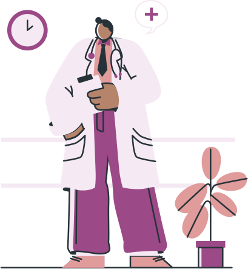

Predição de morte fetal através de modelos de inteligência artificial
A Angels é uma ferramenta desenvolvida para auxiliar o profissional de saúde na identificação de um possível caso de óbito fetal, oferecendo suporte à tomada de decisão durante o pré-natal. Utilizando inteligência artificial, a ferramenta busca minimizar desfechos negativos por meio de uma predição assertiva, contribuindo para um acompanhamento mais eficaz e preventivo.
Predição